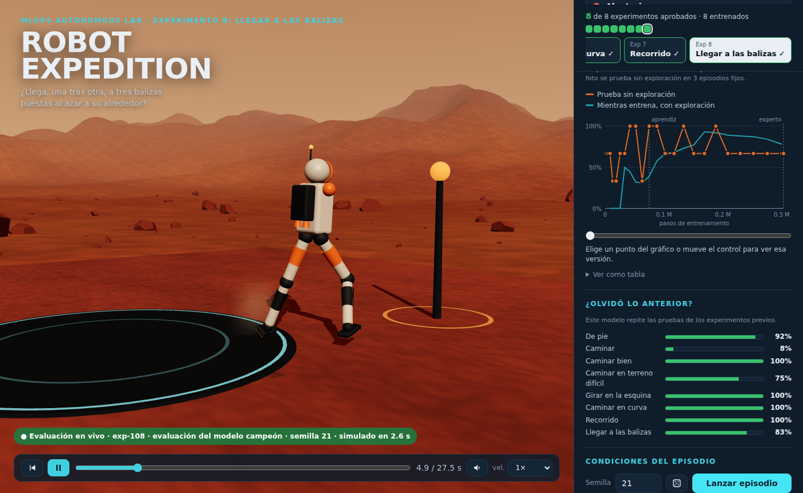
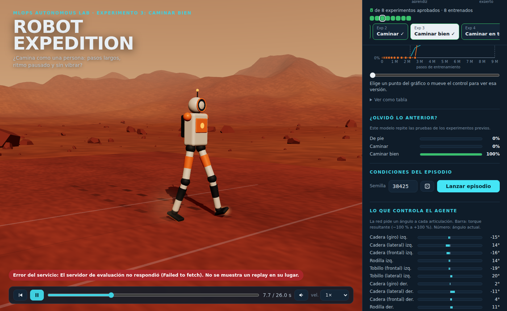

MLOps · Universidad Externado de Colombia · Escenario Robot Expedition
Un robot bípedo de 12 articulaciones aprende, en Marte y de a una dificultad por vez, a caminar y a llegar a balizas, sin olvidar nada de lo anterior.
1 · Problema

2 · Ambiente
| Elemento | Valor |
|---|---|
| Observación | 58 valores: postura, velocidades, ángulos, contacto de pies, gravedad, comando, reloj de marcha |
| Acción | 12 ángulos objetivo en [-1, 1] → servo PD por articulación |
| Paso | Física cada 0,004 s · decisión a 50 Hz |
Fallo (terminated) | Toca el piso, se agacha o se inclina más de 40° |
| Éxito | Cumple la tarea con calidad de marcha ≥ 55/100 |
| Truncado | Se acaba el tiempo (10 a 45 s) |
Recompensa versionada: seguir la velocidad y el rumbo pedidos, torso erguido, alternar las piernas, zancada humana; castigos por vibrar, arrastrar el pie, gastar torque y caer (−30).
El robot ve la gravedad pero no el piso: el terreno lo descubre por cómo responden sus pies. En el Exp 8 la baliza llega como rumbo pedido.
3 · Evolución de la dificultad
| Nivel | Exp | Decisión nueva | Examen |
|---|---|---|---|
| N1 | 1 De pie · 2 Caminar · 3 Caminar bien | Sostenerse, coordinar piernas, marcha humana | 83 · 100 · 100 % |
| N2 | 4 Terreno · 5 Esquina · 6 Curva · 7 Recorrido | Adaptar el paso al piso, girar, avanzar girando, cambiar de orden | 75 · 100 · 75 · 100 % |
| N3 | 8 Balizas · 9 Exploración entre rocas · incidente de pisos sueltos | Cuándo girar, caminar y detenerse según la meta; por dónde rodear rocas | 83 % · 9: 25 % |
Cada uno parte del campeón anterior. Desde el Exp 5 solo aprueba si sigue aprobando los exámenes anteriores: en los Exps 2 a 4 el campeón había perdido De pie (0 a 42 %), y así nació la regla.
4 · Algoritmo
| Aleatorio | 0 / 24 |
| Regla: servo sin red | 3 / 24 |
| Modelo aprendido | 20 / 24 |
5 · Hipótesis del Exp 8
Línea base: el campeón del Exp 7 ya sabe girar, caminar recto y en curva; llegar a balizas no exige movimientos nuevos. Política congelada.
Candidato: ajuste fino con PPO en la tarea (1 M de pasos, tasa 3e-5), tres semillas de entrenamiento.
Decisión: quedarse con la línea base. El ajuste perturba una marcha que ya era buena. Todo queda conservado en MLflow y DVC.
| Modelo | Balizas, 40 episodios nuevos |
|---|---|
| Línea base (semilla 1) | 37 / 40 |
| Candidato semilla 2 | 24 / 40 |
| Candidato semilla 3 | 25 / 40 |
| Candidato semilla 4 | 34 / 40 |
En el examen oficial los candidatos además olvidan el terreno (8, 33 y 0 %; mínimo 75 %): el ajuste fino desarma lo anterior.
6 · Exp 9 · Exploración entre rocas
| Navegador (24 episodios en MuJoCo) | Llega | Choca |
|---|---|---|
| Regla: ir directo | 0 | 21 |
| Aleatorio | 0 | 5 |
| Base | 1 | 11 |
| Suave (no invierte giros) | 5 | 16 |
| Robusto (alcance real + física al azar) | 6 | 5 |
7 · Lo que no funcionó
8 · Versionado
| Qué | Cómo |
|---|---|
| Código y ambiente | git: un tag por experimento (exp-101 … exp-108) y release final; robot MJCF versionado |
| Configuración | Un yaml por experimento; snapshot inmutable publicado con cada modelo |
| Escenarios | DVC: suite fija de examen y trayectorias por episodio |
| Experimentos | MLflow: una corrida por semilla con hipótesis, parámetros y commit |
| Modelos | DVC + Model Registry (alias campeon) + manifiestos con SHA-256 y contrato |
9 · Pipeline, monitoreo y rollback
/sim/api/estado: versión servida, SHA-256, latencia y errores.10 · Despliegue

11 · Demostración
12 · Cierre